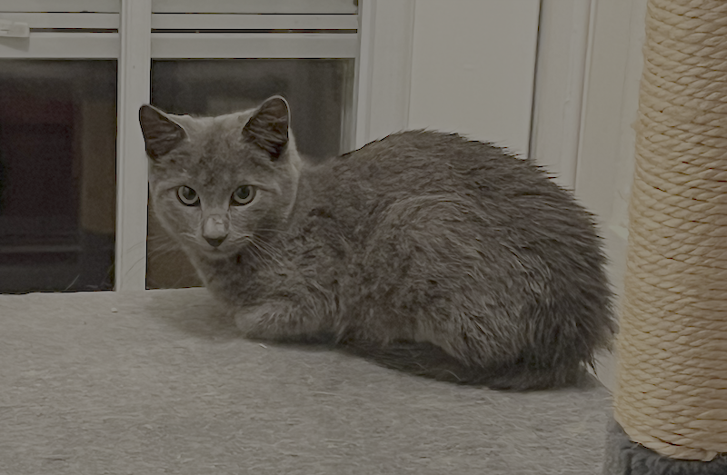

A neighbor and I spotted this very small, dark-colored kitten wandering South on North Uber Street around 6:30 PM on the night of Saturday, November 23.
The kitten was hiding under cars, meowing pretty loudly, and seemingly very hungry.
We were able to coax the kitten into a trap with some food to get them cleaned up, out of the cold, and off of the street.
-
What:
- Small, timid, dark-colored kitten.
-
When:
-
Where:
- 850-block of North Uber Street, between Poplar & Parrish Streets.